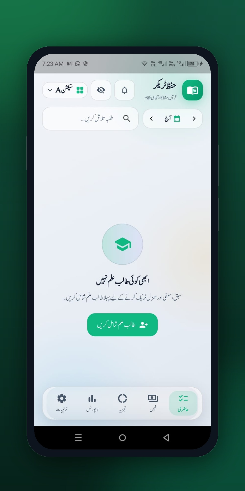
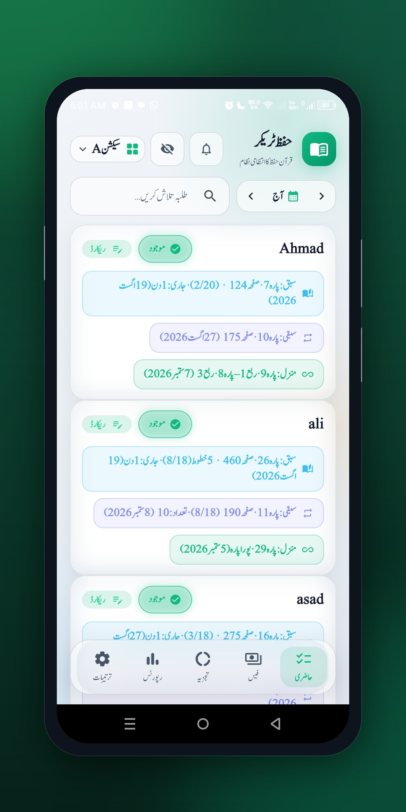
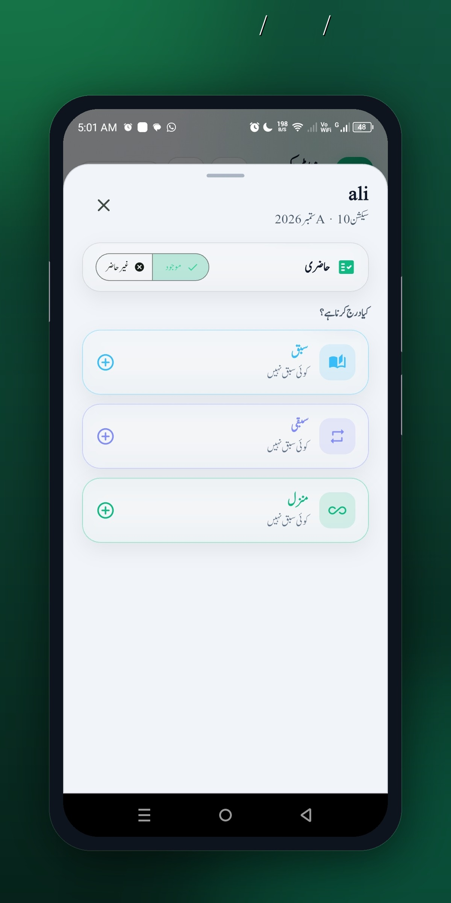
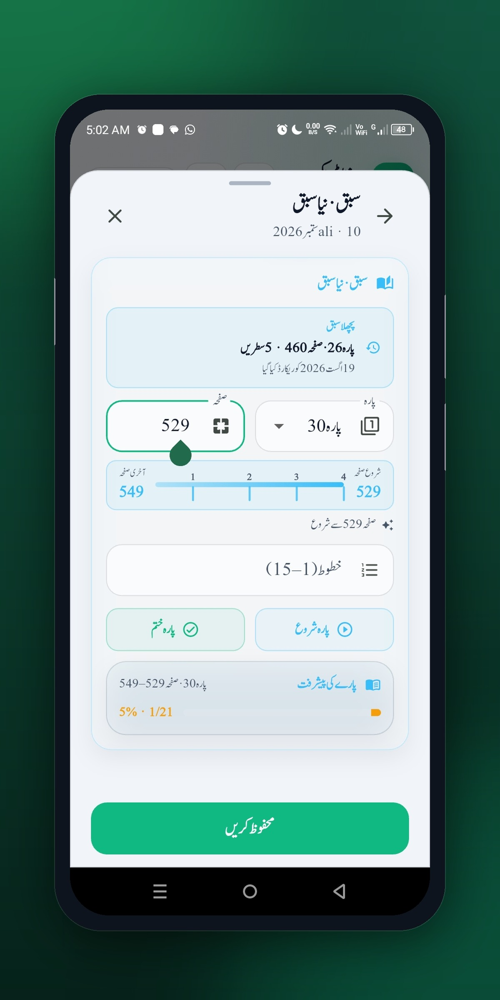

The ultimate Quran memorization management app for teachers, Huffaz, and Madaris. Track Sabaq, Sabqi & Manzil with powerful analytics, PDF reports, and Google Drive backup.
Download Free APKHuffaz Tracker v5 is built from the ground up to make Quran memorization tracking simple, efficient, and organized.
Add, edit, and manage unlimited students. Track individual progress, attendance, and memorization status for each student.
Comprehensive tracking for daily Sabaq, revision (Sabqi), and periodic review (Manzil) with detailed status indicators.
Visual progress reports with charts and statistics. See weekly summaries, completion rates, and identify students who need attention.
Generate professional PDF reports for individual students or the entire class. Share with parents and administration easily.
Backup your data to Google Drive and restore it anytime. Never lose your students' progress data again.
Set reminders for Sabaq times, attendance checks, and review schedules. Stay consistent with your memorization routine.
A clean, modern interface designed for ease of use. Track your Huffaz progress with style.




Getting started with Huffaz Tracker v5 takes just 3 simple steps.
Add your students with their names, details, and memorization target paras. Set up your class in minutes.
Log daily Sabaq, mark attendance, and update Sabqi/Manzil status. The intuitive interface makes daily tracking effortless.
View progress analytics, generate PDF reports, and share with parents. Stay on top of every student's journey.
Everything you need to know about Huffaz Tracker v5.
Join teachers and Huffaz worldwide who are using Huffaz Tracker v5 to manage their Quran memorization journey.
Download Free APK